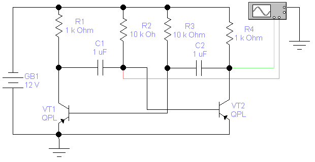
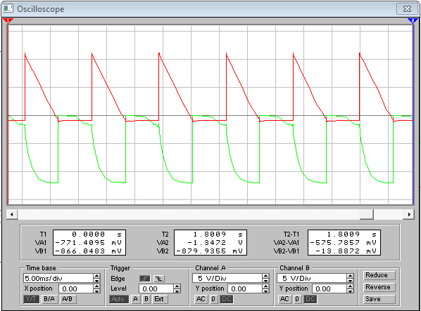
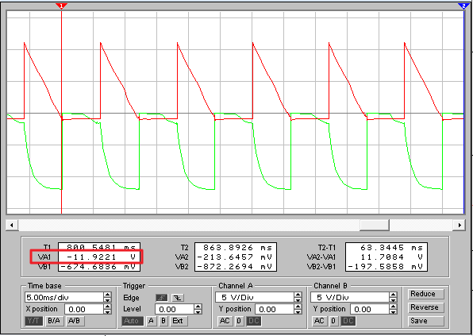
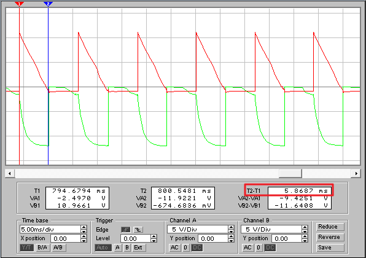
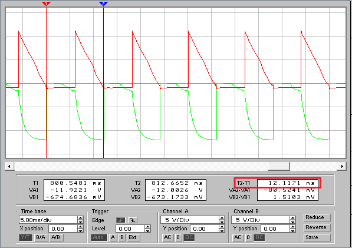

Electronics Workbench
Исследование работы
симметричного мультивибратора
в программе
Electronics Workbench
Изучите принципы работы симметричного мультивибратора здесь.
- Запустите программу Electronics Workbench.
- Соберите модель схемы симметричного мультивибратора (рис. 1).

Рис. 1 - Модель схемы симметричного мультивибратора
- Установите свойства элементов схемы (табл. 1).
Для установки свойств:- сделайте двойной щелчок на элементе;
- откройте вкладку (Label, Value или Models);
- установите значения.
Таблица 1
Свойства элементов схемы Обозначение
элементаВкладка Label
(Свойство:Значение)Вкладка Value
(Свойство:Значение)Вкладка Models
(Свойство:Значение)GB1 Label: GB1 Voltage (V): 12 V — C1,
C2Label: C1
Label: C2Capacitance (C): 1 µF — R1,
R4Label: R1
Label: R4Resistance (R): 1 kΩ — R2,
R3Label: R2
Label: R3Resistance (R): 10 kΩ — VT1,
VT2Label: VT1
Label: VT2— Library: ewb
Model: QPL - Закрасьте провод идущий к каналу А осциллографа в зеленый цвет: сделайте двойной щелчок на проводе и выберите зеленый цвет. На экране осциллографа осциллограмма сигнала с коллектора транзистора VT2 будет окрашен в зеленый цвет.
- Закрасьте провод идущий к каналу B осциллографа в красный цвет. Осциллограмма сигнала с базы транзистора VT2 будет окрашен в красный цвет.
- Сделайте двойной щелчок на осциллографе, чтобы открыть расширенную модель осциллографа.
- Щелкните мышкой на кнопке
 в верхнем правом углу, чтобы включить схему. Через 10-12 секунд повторно щелкните мышкой на кнопке , чтобы выключить схему.
в верхнем правом углу, чтобы включить схему. Через 10-12 секунд повторно щелкните мышкой на кнопке , чтобы выключить схему. - Подберите шаг развертки (Time base) и чувствительности каналов (Channel A/Channel B) для получения четкого изображения не менее 3-х периодов сигналов (рис. 2).

Рис. 2 - Настройка шага развертки и чувствительности каналов
- Зарисуйте осциллограммы (снимите скриншот) на каналах А и В.
- Определите амплитуды выходного сигнала Um:
- подведите красный маркер к вершине зеленой осциллограммы;
- значение в поле VA1 покажет амплитуды выходного сигнала (рис. 3).

Рис. 3 - Определение амплитуды выходного сигнала
- Определите длительность импульса выходного сигнала tимп:
- подведите синий маркер к конечной точке импульса на зеленой осциллограмме;
- подведите красный маркер к начальной точке импульса на зеленой осциллограмме;
- значение в поле T2-T1 покажет длительность импульса выходного сигнала (рис. 4).

Рис. 4 - Определение длительности импульса выходного сигнала
- Определите период выходного сигнала T:
- подведите синий маркер к конечной точке импульса на зеленой осциллограмме;
- подведите красный маркер к конечной точке соседнего импульса на зеленой осциллограмме;
- значение в поле T2-T1 покажет период выходного сигнала (рис. 5).

Рис. 5 - Определение периода выходного сигнала
- Вычислите частоту импульсов f по формуле:
f =1 / T.
- Результаты запишите в рабочей тетради (табл. 2).
- Установите ёмкости конденсаторов 2 мкФ и выполните пункты 7-14.
- Установите ёмкости конденсаторов 4 мкФ и выполните пункты 7-14.
- Проанализируйте полученные результаты.
- Оформите отчет по проделанной работе.
Таблица 2
| № измерения | 1 | 2 | 3 |
|---|---|---|---|
| Ёмкость конденсаторов С1 и С4, мкФ | 1 | 2 | 4 | Амплитуда выходного сигнала Um, В |
| Длительность импульса выходного сигнала tимп, мс | |||
| Период выходного сигнала T, мс | Частота выходного сигнала f, Гц |